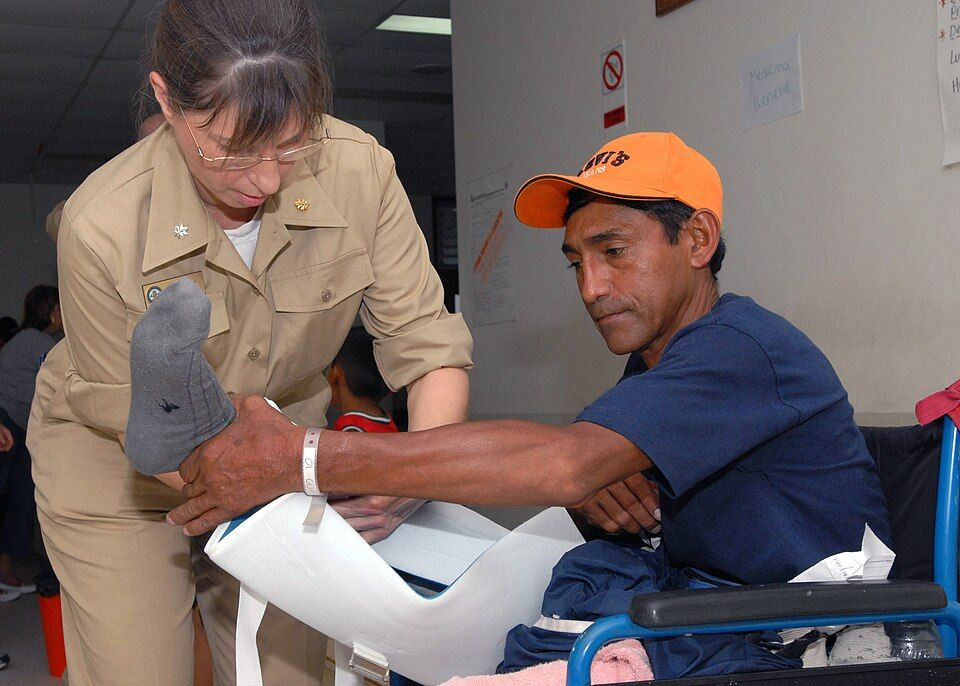

Cura de la herida quirúrgica
Una herida quirúrgica cerrada necesita pocas curas: un apósito adecuado, no tocarla sin motivo, vigilar los signos de infección y retirar los puntos o las grapas en el momento adecuado.
Revisado en noviembre de 2026 · Fuentes al final de la página

,_wraps_the_leg_of_a_patient_at_Puerto_Barrios_National_Hospital.jpg){kind=link}
Primeros días
- Se deja el apósito puesto en quirófano unas 48 horas si está limpio y seco. Se cambia antes si está manchado o despegado.
- Para curar: higiene de manos, técnica aséptica, limpieza con suero fisiológico desde la herida hacia fuera y secado con toques.
- La persona puede ducharse a partir de las 48 horas, sin frotar la herida, y secarla bien después.
- No se recomiendan antibióticos ni antisépticos tópicos de forma rutinaria sobre una herida cerrada.
Signos de infección
Enrojecimiento que se extiende, calor, dolor que aumenta en lugar de disminuir, hinchazón, supuración o mal olor, separación de los bordes y fiebre. Suelen aparecer entre el tercer y el décimo día. Si aparecen, hay que avisar; puede hacer falta abrir la herida y tomar un cultivo.
Retirada de puntos y grapas
| Zona | Días orientativos |
|---|---|
| Cara | 4–5 |
| Cuero cabelludo | 7–10 |
| Tronco y abdomen | 10–14 |
| Extremidades | 10–14 |
| Sobre articulaciones o zonas de tensión | 14 |
Lo decide el cirujano según la herida y el paciente: en diabéticos, personas en tratamiento con corticoides o desnutridas puede retrasarse. Se suelen retirar alternos primero, y si los bordes se mantienen unidos, el resto. Se pueden poner tiras adhesivas de aproximación.
Drenajes
- Anota el tipo, el aspecto y el volumen del débito en cada turno.
- Mantén el sistema cerrado y por debajo del nivel de la herida. Vigila que no se acode.
- Un aumento brusco del débito o un débito hemático franco se comunican de inmediato.
Fuentes
- National Institute for Health and Care Excellence. Surgical site infections: prevention and treatment (NG125), 2019, actualizada en 2020. www.nice.org.uk
- Organización Mundial de la Salud. Global guidelines for the prevention of surgical site infection, 2.ª edición. Ginebra: OMS; 2018. www.who.int
- Organización Mundial de la Salud. WHO Guidelines on Hand Hygiene in Health Care. Ginebra: OMS; 2009, y material de la campaña «Sus 5 momentos para la higiene de las manos». www.who.int